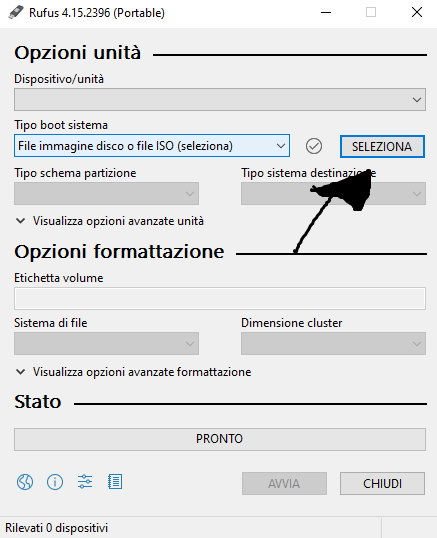
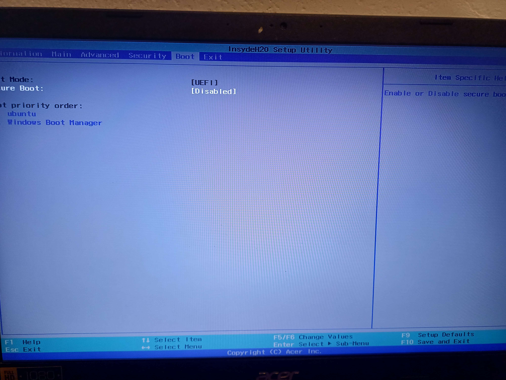
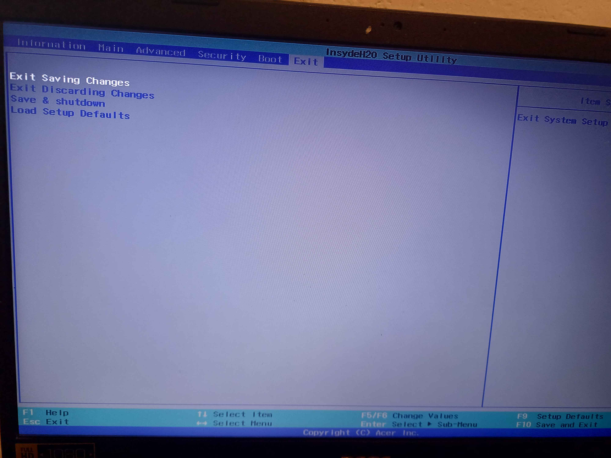

In this tutorial, I will guide you through the process of installing a new Operating System on your PC. The only things you need to follow this tutorial are a USB drive with at least 10–15 GB of storage, an ISO file, and some patience :>
With that said, let's begin with our tutorial.
Downloading the ISO File
The first thing we are going to do is download the ISO file of the Operating System we want to install. For example, if we want to install Linux Mint, we can search for "Linux Mint Download", and you should be able to find the official Linux Mint download page. Once you have decided which mirror you want to use, download the ISO file. You should see that the file has an .iso extension. I used Linux Mint as an example, but you can download pretty much any Operating System you want. The procedure will usually be very similar.
So, if the file you downloaded is an .iso file, we are good to go and can proceed with our tutorial.
Downloading Rufus
After that, you need to download Rufus. You can search for it in your browser, or you can simply use the link below. This will take you directly to the official Rufus website.
Using Rufus
Once you are on the Rufus website, download the version that is appropriate for your PC. If you are using a 64-bit Windows PC, you can normally choose between the Standard version and the Portable version. The Portable version does not require a traditional installation. If you are using 32-bit Windows, download the x86 32-bit version.
Once you have downloaded Rufus, open it, and on the Device/Unit, select your USB.
⚠️ IMPORTANT: Make sure you select the correct USB drive, because Rufus will erase the data on it when creating the bootable USB.⚠️
Once you have selected your USB drive, on Boot Type System, click on Select:

Choose the .iso file you downloaded earlier.
Once you have selected the ISO file, click Start, and don't remove your USB until it finished.
Booting from the USB
Once Rufus has finished, safely remove the USB drive and plug it into the PC where you want to install the Operating System.
Turn the PC off and then turn it back on. Now, you need to access the PC's BIOS/UEFI settings or, depending on your PC, the Boot Menu.
The key you need to press depends on the manufacturer and the specific PC or motherboard are F2, Delete, F10, F11, F12, or Esc. Try pressing the appropriate key repeatedly immediately after turning on the PC. If it doesn't work the first time, don't worry you may simply need to try another key.
If you manage to enter the BIOS/UEFI, you now have to configure the PC to boot from your USB drive.
The BIOS/UEFI interface can look different from one PC to another, but the step to do is usually the same.
Look for a section called Boot, Boot Order, or something similar, you need to move your USB drive to the top of the boot order.

Alternatively, some PCs allow you to use a Boot Menu and simply select the USB drive for this one boot. This is often easier because you don't have to permanently change the boot order.
Saving the Changes
If you changed the boot order in the BIOS/UEFI, look for an option such as Exit Saving Changes, Save Changes and Exit, or something similar.
Select it and confirm. Your PC should restart and, if everything went correctly, it should boot from the USB drive and start the Operating System installer. From there, simply follow the installation instructions provided by the Operating System.

This one is usually the same everytime: When you are installing it, at the moment the first restart is being done, remove the USB. This will make the Operating System install, if you don't do this, it will may start again the Installation of the Operating System.
If the USB doesn't boot
If it doesn't work, in some Operating Systems may require specific BIOS/UEFI settings. In some cases, Secure Boot may need to be disabled. You may also encounter a Fast Boot option in the BIOS/UEFI. On some systems, disabling it can make it easier to access the BIOS/UEFI or detect external devices during startup and can even fix the problem, so you can try it.
Once you done that it should start and you will be able to do the installation of your Operating System
If you are having trouble downloading your Operating System, try looking for a guide online or, even better, check the official website of the Operating System you are trying to install. There are many different Operating Systems, and although the general installation process is often similar, some steps can be different.
With that said, I hope this tutorial helped you do what you wanted to do, and I hope you have a great day! See you in the next tutorial! :>